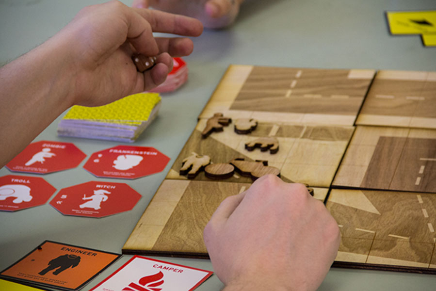

Hello, From the Magic Tavern.

I've created several pieces of Fan Art for the chicago based improv podcast Hello, From the Magic Tavern which ultimatly lead to me creating the episode art for the 34th episode, Chunt for Red October.
Road To Ruin
As an avid board game fan, I chose to create one of my own during my time at the University of Illinois. The concept of the game is a cooperative, randomly generated mission where you are a monster hunter on the quest for relics.
Illustration

I love making illustrations based on the shows or movies I'm currently watching. Here are some of my more popular pieces based on Breaking Bad.